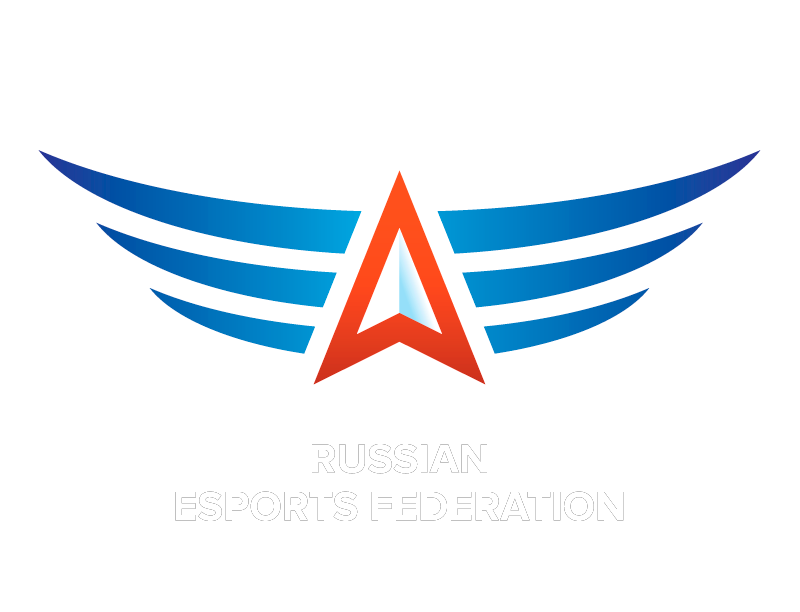

Мы - экосистема, объединяющая игроков, зрителей, госорганы и бизнес из 12 регионов РФ и 6 стран-партнёров: Армении, Беларуси, Монголии, Узбекистана, Казахстана и ОАЭ
Киберспорт
в РЭУ
Есть вопросы? Мы на связи!
- 

Инфраструктура
Достижения
Суперфинал
МСКЛ+Провели на территории РЭУ финальные игры масштабного всероссийского турнира, организованного Федерацией компьютерного спорта г. Москвы
Форум
ФКС РоссииСтали соорганизаторами крупнейшего молодёжного киберспортивного форума, организованного Федерацией компьютерного спорта России.
Исследование студкиберспорта
Приняли участие в роли экспертов в исследовании студенческого компьютерного спорта, проводимого
Минобрнауки РФ и ВШЭНикита redla1N Пономарёв –
MVP годаСтудент Плехановки был признан самым ценным игроком 2023 года вне зависимости от дисциплин по версии ФКС России.
МСКЛ-11 (2021)
Бронза в общекомандном зачёте
HearthStone
Чемпионы МСКЛ-11 (2021)
FIFA 21
Бронзовые призёры МСКЛ-11 (2021)
CS:GO
Бронзовые призёры МСКЛ-11 (2021)
МСКЛ-10 (2019/2020)
Вице-чемпионы общекомандного зачёта
CS:GO
Чемпионы МСКЛ-10 (2019/2020)
FIFA 21
Чемпионы МСКЛ-10 (2019/2020)
Контакты
Адрес
115054, Москва, Стремянный переулок, д.36
Почта
Sidorov.DA@rea.ruТелефоны
+7 (495) 800-12-00,
доб. 1067Социальные сети